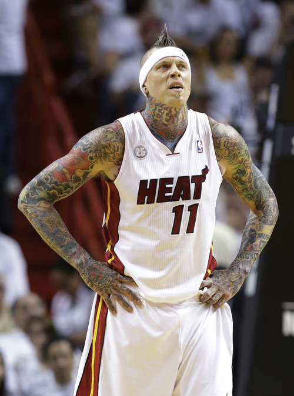

Chris Andersen
Basketball is another sport I've followed very closely for many years and I was a big Miami Heat and really liked several of the players on the team. This included Mike Miller and Lebron James, but my most favorite was Chris Andersen. I loved how he had such a unique and distinctive look and how he was literally a colorful figure due to the many tattoos he had. He was also known for being a high energy player and for his defensive and shot blocking abilities.